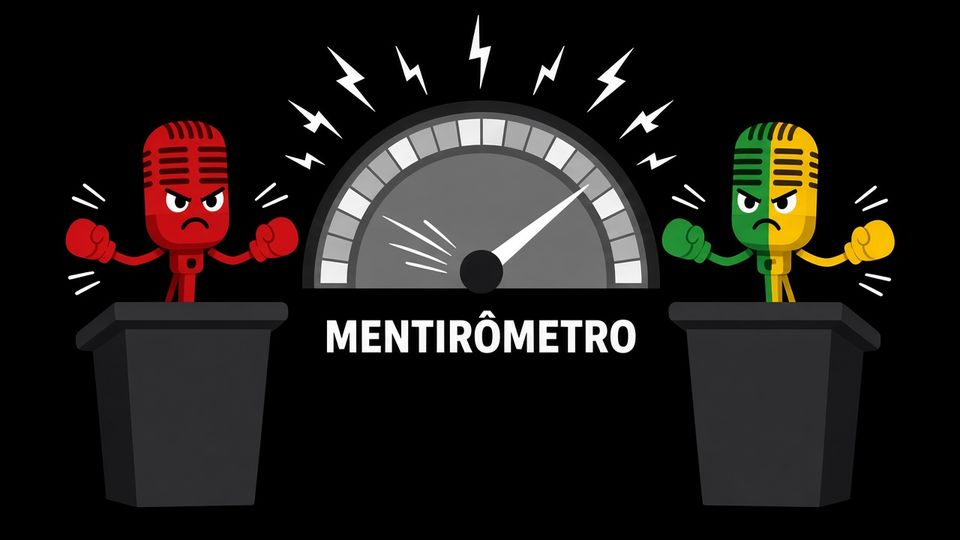

Faltam
para Lula × Flávio Bolsonaro · TV Globo · sexta 23/10, 21h20
Quem vai mentir mais?
Assista ao debate com o Mentirômetro
O nosso detector de mentiras mostra quem mente mais. Em tempo real, durante o debate.
MENTIRÔMETRO
começa sexta, 21h20
Cada frase na balança. Ao vivo.
A gente checa. Você vê quem mente mais.

Quem leva o Troféu Pinóquio?
Faça seu palpite: quem vai mentir mais no debate? Na sexta, o Mentirômetro decide.
É só palpite, de brincadeira: não tem aposta nem dinheiro. Um palpite por navegador.
TV Globo · Sexta, 23/10 · 21h20 (Brasília)
O último debate.
Ao vivo. Checado frase por frase.
Lula e Flávio Bolsonaro frente a frente na Globo. Enquanto eles falam, o Mentirômetro checa cada afirmação dos dois, com a mesma régua e a fonte na tela. Você vota em tempo real e manda seu super chat.
- Verdade ou não, em segundos. Cada frase vira um veredito com fonte, enquanto o debate acontece.
- A mesma régua para os dois. Os mesmos critérios e as mesmas fontes para os dois candidatos.
- Você não só assiste. Vote ao vivo e veja o placar mudar junto com quem está assistindo.
Perguntas rápidas
É grátis?
Sim. Assistir, votar e receber o lembrete não custa nada. O super chat é opcional.
É imparcial?
Usamos os mesmos critérios para os dois candidatos. A gente checa o que é dito, não quem diz. Cada veredito mostra a fonte para você conferir.
Como vocês checam?
A fala é transcrita ao vivo e dividida em afirmações. Cada uma é comparada com dados oficiais e checagens profissionais já publicadas. Quando não há dado confiável, aparece "sem dados", nunca um chute.
Quais fontes?
Órgãos oficiais (IBGE, Banco Central, ministérios, TSE) e agências de checagem profissionais. O link da fonte aparece junto com cada veredito.